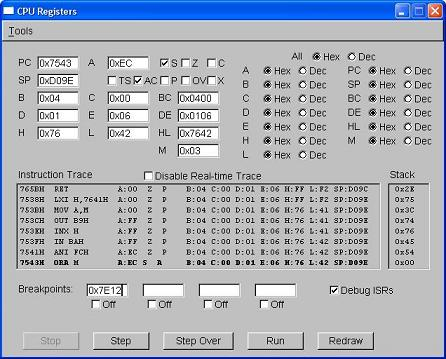
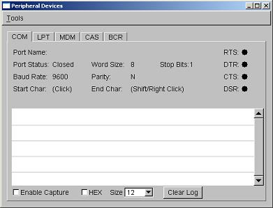
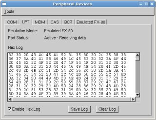
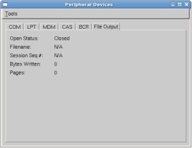
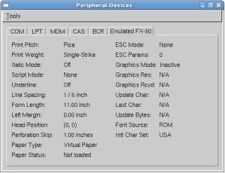

This chapter describes additional tools that VirtualT offers beyond the original functinality of the hardware. These tools include things such as a CPU Register view / edit window, a memory editor, disassembler, etc.
The CPU Registers dialog shows the current status of the emulated 8085 CPU. It provides display / edit fields for each of the register and flags. The register fields are updated periodically during emulation to show CPU activity. The periodic update can be disabled via the "Disable Real-time Trace" checkbox. The register edit fields are read-only while the CPU is executing. To enable editing of CPU registers, use the Stop pushbutton to halt the CPU emulation and activate the edit fields.
In addition to displaying CPU registers, the dialog provides limited debug capability and a disassembly window. The debug features consist of Stop, Step Step Over and Run buttons and four edit fields for specifying debug breakpoints and enabling and disabling them. Also, the debugger can be configured to ignore ISR debugging which will prevent single step operations from stepping into an interrupt handler. The ISR will be allowed to complete before the single step operation is considered complete.

The Memory Editor window allows the user to view and edit the Model T's memory space. The dialog consists of a selection list to specify the memory region to be display, a panel to allow viewing and editing of the memory, and an edit field to show the address of the memory window cursor.
The values in the list depend on the model being emulated and the selected memory configuration. When Base Memory emulation is enabled, the values will represent each of the banks for the selected model. When the ReMem or Rampac memory emulation is enabled, the list will contain options for RAM and Flash as needed. When a particular bank is selected, the memory edit portion of the dialog will be updated with the data for that bank.
The memory edit portion of the dialog shows the emulated memory in real-time and is not a copy of the memory. This means changes are made "in-place" and are made immediately. Their is no need to save or load. Changes to the ROM space in Base Memory emulation mode will not be written to the ROM file. As can be seen in the figure below, the edit window consist of an address field, a hex display field and an ASCII display field. Data can be edited in either hex or ASCII formats. Changes are always made in overwrite mode vs. insert mode. Standard keyboard edit keys are supported such as left, right, pageup, etc. The TAB key will move the cursor between the hex and ASCII edit fields. Additionally the cursor can be positioned anywhere in the edit window by clicking the mouse pointer in the desired location.
The address display field shows the absolute address of the current edit cursor. There is currently no way to type an address and "move" to that location, but this feature will be added later.
The Peripheral Devices dialog presents device monitor tabs for each of the Model T built-in peripherals. Currently, the COM and LPT peripherals are supported by VirtualT and contain monitor controls. In addition, emulated printers connected to the LPT port will have a monitor tab for displaying the current printer status. Other tabs are only placeholders.
This tab shows the current status of the integrated RS-232 Serial port and provides a serial port monitor window to display traffic on the port. To enable this feature, select the "Enable Capture" checkbox. The HEX checkbox controls the data display format in the port monitor window.

This tab shows the current status of the LPT emulation and provides an interface for logging and saving LPT port data in hex format. The currently selected printer will be displayed and an indication if there is an active print session. Enabling the Hex Log will cause all data sent to the LPT from that point forward to be capture and displayed periodically in the hex display window. The Hex data can be saved in ASCII format using the "Save Log" button or cleared using the "Clear Log" button. The data captured represents the exact data that would appear on the physical LPT connector, including any CRLF translation setup on the LPT Setup tab. It does not include translations or filtering performed by emulated printers.

This tab shows the current status of the File Output Printer emulation. Items reported on this tab include the active output filename, the file open/close status and the number of bytes and pages written during the active session.

This tab shows the current status of the Host Device Printer emulation including current Host Port name and Open/Closed status.
This tab shows the current status of the FX-80 Emulation. The controls on this tab are for display purposes only and cannot affect the emulation status.

The disassembler window provides a disassembly of the emulated model's System ROM. Additional functionality will be added in a future release of VirtualT to extend this capability to disassemble user selected programs.
The ReMem Configuration Dialog provides edit controls for iewing and modifying the ReMem memory expansion emulation settings. Controls are provided for both the current activation state and for editing the eight maps that control MMU operation. Additionally, memory display windows are provided to indicate current RAM and Flash memory usage and mapping locations.
Maps are edtied by selecting the desired map, bank and vector updating the conrols provided. Vectors for a given map and bank can be updated sequentially with incrementing Map Data pointers to map consecutive 1K regions of RAM or Flash. The Chip Select and Sector Lock bits will be copied. To use this feature, select a starting vector and click "Copy Sequential". All entries below the selected vector will be updated.